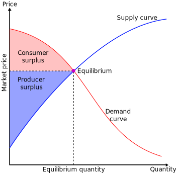

关于消费者剩余的刻画
有时需要刻画一些新策略对消费者剩余 (consumer-surplus, CS) 的影响，如产品的绿色程度、相应企业的社会责任等。传统经济学中关于 CS 的刻画主要是产品价格。

从源头开始
假设消费者数量为 $n$。消费者 $u_i = w_i - \alpha p + \beta e$，其中 $p$ 为价格， $e$ 为商品的绿色度，且 $w_i \sim U[0, w_H]$.
对于消费者 $i$ 而言，当 $u_i > 0$ 时，会购买。即 $w_i > \alpha p - \beta e$，那么需求函数为
\[q = n \int_{(\alpha p - \beta e)}^{w_H} f(w) dw\] \[= n \frac{w_H - (\alpha p - \beta e)}{w_H}\]转换为
\[p = \frac{w_H}{\alpha} - \frac{w_H}{n \alpha} q + \frac{\beta}{\alpha} e\]将上述系数 ${\frac{w_H}{\alpha}, -\frac{w_H}{n\alpha}, \frac{\beta}{\alpha}}$ 改写为 ${a, -b, c}$，即 $\frac{w_H}{\alpha} = a, -\frac{w_H}{n\alpha} = -b, \frac{\beta}{\alpha} = c$，得到 $p = a - bq + ce$
故消费者剩余可表示为
\[CS = \int_0^{w_H} \max \{u_i, 0\} f(w) \, dw\] \[= \int_{(\alpha p - \beta e)}^{w_H} (w - \alpha p + \beta e) f(w) dw\]化简为
\[CS = \frac{(w_H + \beta e - \alpha p)^2}{2 w_H}\]证明完毕.
如有错误请与我联系。